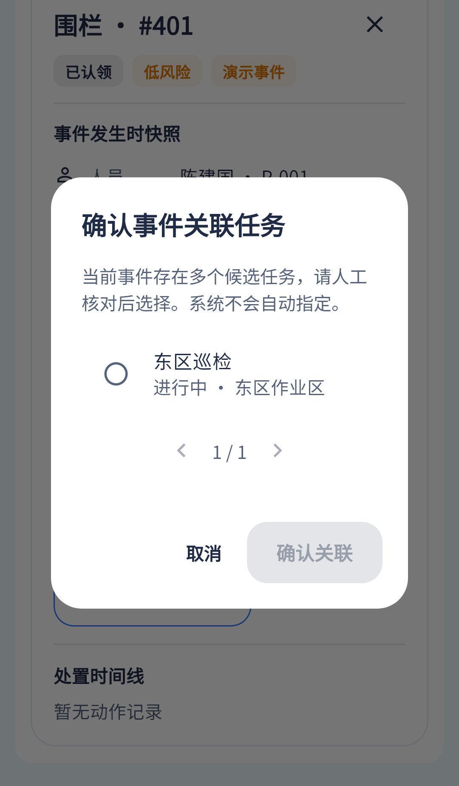

关联流程已接；搜索和足以判断关联正确性的字段待补，不能仅按名称选任务。
相同 · 已有基础
候选作业、单选、确认、取消与人工核对提示已有。
不同 · UI与场景
当前居中对话框，候选列表有分页；缺设计搜索、工作票与参与人摘要。
01 / 先看 UI
两图显示宽度统一；设计390px与当前360逻辑宽的画布不同。各图可独立滚动到底，点击“原图”放大。

使用既有组件截图；业务数据为示例。
02 / 逐项核对功能与小交互
入口：待确认关联的事件 → 确认关联任务 · 当前形态：弹层
| 编号 | 部位 | 设计要求 | 当前UI | 功能结论 | 下一步 |
|---|---|---|---|---|---|
| 28-01 | 说明 | 核对人员、区域和时间 | 当前提示多个候选人工选择 | 已有展示 | 补具体核对维度 |
| 28-02 | 搜索 | 搜索作业名称 | 当前无 | 缺失：候选查询未带搜索参数 | 与05共用服务端搜索，非仅当前页本地过滤 |
| 28-03 | 候选卡 | 名称、状态、人数、票号 | 当前名称、状态、区域 | 部分：缺人数/参与人员/票号/时间 | 补可辨字段，同名作业需稳定编号 |
| 28-04 | 单选 | 选择一个任务 | 当前单选存在，未选时禁用确认 | 已有代码 | 保留选中反馈和跨页选择规则 |
| 28-05 | 分页 | 设计只列两项 | 当前候选分页 | 已有代码：fetchTaskCandidates | 保留，验页码与选中项 |
| 28-06 | 确认 | 确认关联 | 当前POST事件/task携taskId/version | 已有代码 | 成功刷新关系与原始记录，冲突保留选择 |
| 28-07 | 显示条件 | 仅需要确认的事件 | 当前taskMatch=pending+角色+权限 | 已有代码 | 不将按钮隐藏误判缺失，不随意改已明确关系 |
| 28-08 | 取消 | 取消不改变关联 | 当前已有 | 已有代码 | 保留返回原事件 |
源码依据
events/events_page.dart:1314；events/event_repository.dart:94,151；events/event_policy.dart:57
链接为随报告保存的带行号快照；行号对应分析时源码。以函数和字段共同定位，不能将请求代码视为执行成功证据。